Типы дорожек.

Очертания дорожек, рисунок мощения, фактура и цвет материала, из которого сделаны дорожки, могут быть разнообразными и зависят от их назначения и общего стиля оформления участка. Кроме того, материалы покрытия дорожек должны быть практичными, долговечными и не требующими сложного ухода.
Гравийная дорожкаГравийные дорожки обычно строят в той местности, где неподалеку имеется карьер или предприятие по дроблению щебня.
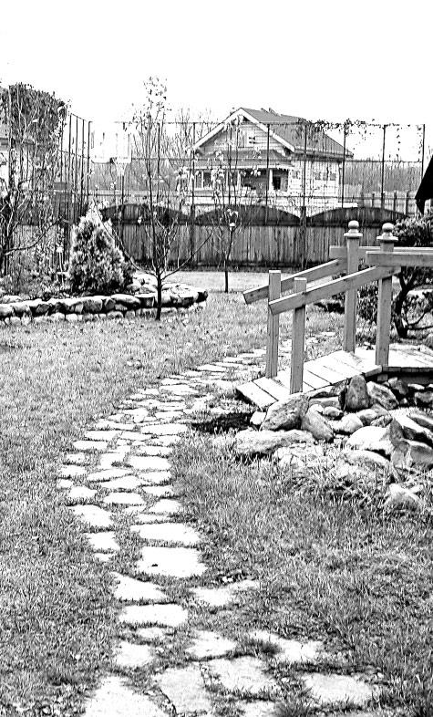
Дорожки из щебня и гравия служат достаточно долго и просты в изготовлении. Для их строительства необходимо подготовить ложе глубиной 15 см, дно тщательно утоптать, на дно уложить слой крупного гравия, смешанного с тяжелой глиной, толщиной 10–12 см, этот слой полить водой из шланга, дать ей впитаться и тщательно утрамбовать или укатать щебеночное основание. Сверху насыпать слой мелкого гравия толщиной 3–5 см, утрамбовать и несколько раз полить водой для усадки.
Совет
Существует другой способ укладки гравийной дорожки: на подготовленное дно ложа уложить и утрамбовать слой крупного щебня толщиной 5 см, затем слой песка, смешанного с глиной, толщиной 2 см. Песочную подушку утоптать и полить водой для осадки и уплотнения, после того, как вода впитается, поверх насыпать слой мелкого гравия толщиной 2 см и полить водой.
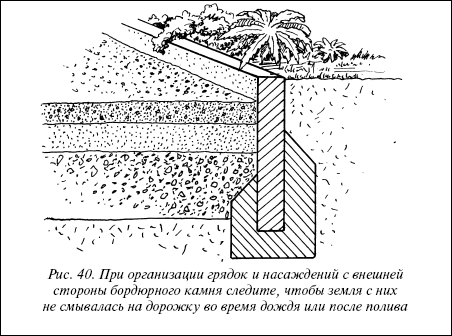
Рис. 40. При организации грядок и насаждений с внешней стороны бордюрного камня следите, чтобы земля с них не смывалась на дорожку во время дождя или после полива
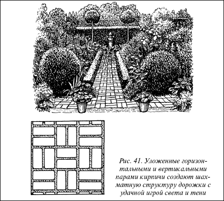
Рис. 41. Уложенные горизонтальными и вертикальными парами кирпичи создают шахматную структуру дорожки с удачной игрой света и тени
Кирпичная дорожкаДля строительства такой дорожки лучше взять прочный обожженный кирпич любого цвета, кстати, цвета можно комбинировать, добиваясь хорошего художественного эффекта. Обычно кирпичные дорожки делают на небольших площадях, у водоемов, в местах отдыха, у террас, детских площадок. Комбинируя варианты укладок, можно получить множество рисунков. Мостить кирпичом проще, чем строить щебеночную или гравийную дорожку.
На утрамбованное дно подготовленного ложа насыпать щебень толщиной 5 см, а сверху уложить слой песка толщиной 5–7 см и тщательно утоптать, полить водой для уплотнения и снова утрамбовать. Кирпичи можно укладывать непосредственно на песочную подушку или на нанесенный ровным слоем поверх песочного основания цементный раствор с зазором между кирпичами не более 5–6 мм.
Дорожки из булыжникаДорожки из булыжника обычно делают в тех местах, где его можно достать в качестве строительного материала, часто это определяется близостью карьера.
Булыжник очень красив, каждый камень имеет свой неповторимый рисунок, фактуру, цвет, и все вместе они способны сделать мозаичное каменное природное панно. Поэтому дорожки и площадки из булыжника выглядят очень благородно.
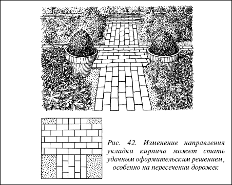
Рис. 42. Изменение направления укладки кирпича может стать удачным оформительским решением, особенно на пересечении дорожек
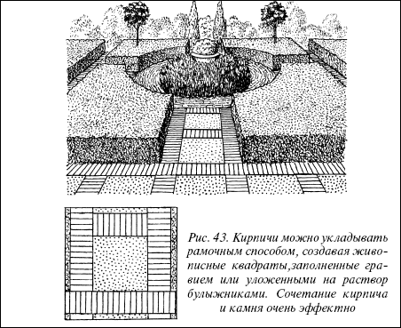
Рис. 43. Кирпичи можно укладывать рамочным способом, создавая живописные квадраты, заполненные гравием или уложенными на раствор булыжниками. Сочетание кирпича и камня очень эффектно
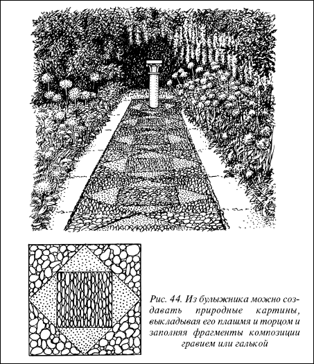
Рис. 44. Из булыжника можно создавать природные картины, выкладывая его плашмя и торцом и заполняя фрагменты композиции гравием или галькой
Дорожки из природного камняСовет
В процессе укладки булыжников поверхность кладки необходимо выравнивать при помощи деревянной дощечки, уложенной сверху.
Дорожки из колотого и плиточного камня превосходят другие виды мощения выразительностью и долговечностью, всегда остаются сухими и чистыми. Но из-за высокой стоимости их применение на участке ограничено. Обычно из них строят входные дорожки, ведущие к дому. Очень хорошо делать узкие дорожки, проходящие через газоны к различным площадкам или рядом с цветочными группами.
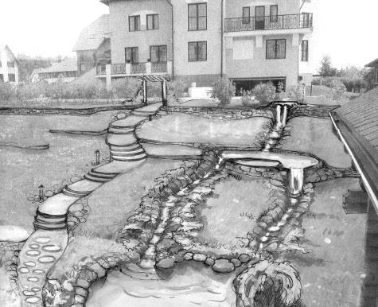
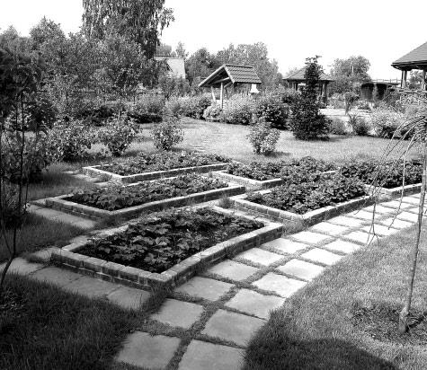
Укладку каменных плит и колотого камня можно производить разными способами: камень кладут на утрамбованный слой песка толщиной 8-10 см, а швы заполняют песком; камни и плиты укладывают на слой раствора, приготовленного из цемента и песка (1: 5), а швы заполняют раствором при помощи профильного мастерка; крупные одиночные камни и плиты укладывают на грунт без подготовки основания. Для этого в дерне намечают штыком лопаты контур плитки и вырезают его кусок по форме плитки на глубину чуть больше ее толщины. На дно образовавшейся в дерне выемки насыпают тонкий слой песка, чтобы выровнять его поверхность. Затем в углубление укладывают камень так, чтобы он оказался чуть ниже уровня поверхности газона и не мог попасть под нож газонокосилки.
Следует учесть
При заполнении цементным раствором швов между камнями старайтесь загладить их как можно ровнее. Небрежные швы могут испортить всю картину. Кроме того, цементный раствор для швов можно подкрасить специальными добавками в контрастный цвет и добиться интересного цветового эффекта.
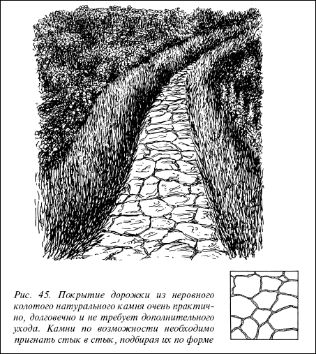
Рис. 45. Покрытие дорожки из неровного колотого натурального камня очень практично, долговечно и не требует дополнительного ухода. Камни по возможности необходимо пригнать стык в стык, подбирая их по форме
Дорожки из бетонных плит
Дорожки из бетонных плит значительно дешевле дорожек из натурального камня. Благодаря необыкновенному разнообразию формы, цвета и фактуры плиток их легко подобрать в тон и стиль оформления участка. Внешняя нейтральность бетона позволяет комбинировать плитки с кирпичом, булыжником, природным камнем. Это зависит целиком от вашей фантазии.
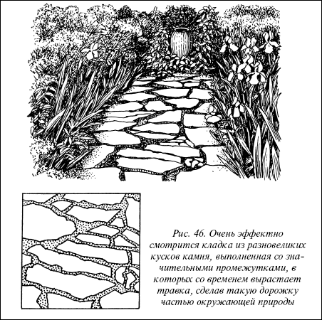
Рис. 46. Очень эффектно смотрится кладка из разновеликих кусков камня, выполненная со значительными промежутками, в которых со временем вырастает травка, сделав такую дорожку частью окружающей природы
Дорожки и площадки из готовых бетонных плит строят следующим образом. На подготовленное основание насыпают слой песка, после выравнивания и утрамбовывания укладывают плиты. Чтобы они не смещались при хождении, их надо заглубить ударами молотка через деревянный чурбачок или доску. При строительстве дорожек из плит, укладываемых встык, слой песка на песчаных почвах может быть в 2–3 см. На глинистых и суглинистых почвах вначале укладывают в 5-10 см слой гравия, шлака или мелкого кирпичного боя, а затем 4–5 см песка.
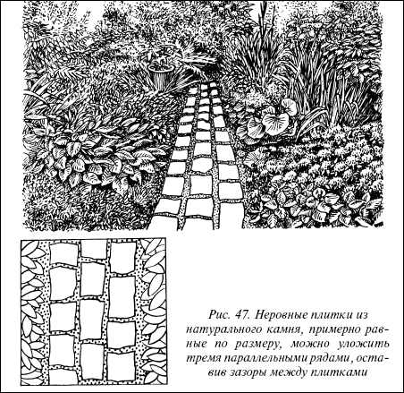
Рис. 47. Неровные плитки из натурального камня, примерно равные по размеру, можно уложить тремя параллельными рядами, оставив зазоры между плитками
Одиночные плиты и плиты, свободно размещенные на газоне, можно укладывать на землю без дополнительного основания.
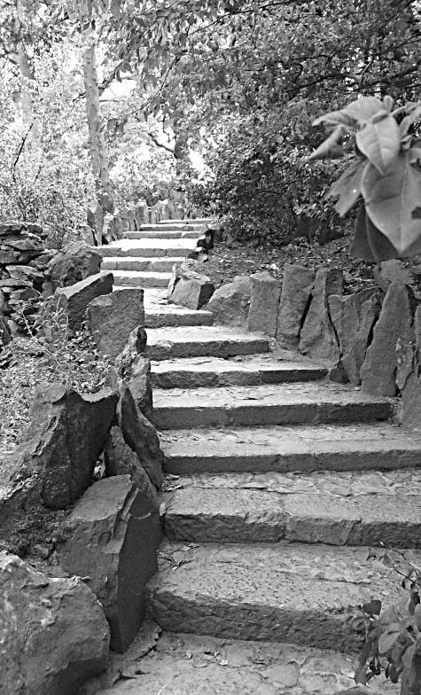
Другими способами укладки бетонных плит является их укладка на раствор, нанесенный на подготовленную подушку. Раствор обычно распределяют небольшими порциями: 4 по углам плитки и 1 по центру. При надавливании под тяжестью плитки раствор равномерно распределяется по всей ее площади.
Бетонные плиты можно легко изготовить самому в деревянных формах или непосредственно на земле по деревянным или металлическим шаблонам.
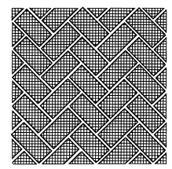
Рис. 48. Бетонные плиты небольшого размера, окрашенные в разнообразные цвета, имитируют кирпичное покрытие. Можно составлять любые цветовые композиции из разноцветных плит
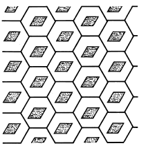
Рис. 49. Небольшие или более крупные бетонные плиты в форме сот с ромбообразным отверстием в центре укрепят почву на оползающем склоне и вскоре станут незаметными благодаря разросшейся траве. В отверстие также можно высаживать однолетние цветы
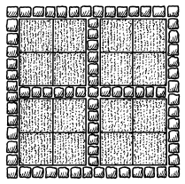
Рис. 50. Бетонные плиты хорошо сочетаются с кирпичом, природным камнем, булыжником. Варианты таких сочетаний разнообразны, не бойтесь комбинировать материалы: умело подобранные, они прекрасно дополняют друг друга, сглаживают строгость линий, смягчают монотонность покрытия
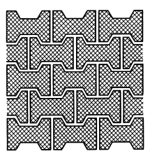
Рис. 51. Плиты необычной формы можно укладывать в любом направлении, создавая разно – образные рисунки покрытия
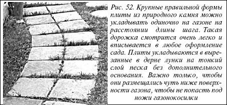
Рис. 52. Крупные правильной формы плиты из природного камня можно укладывать одиночно на газоне на расстоянии длины шага. Такая дорожка смотрится очень легко и вписывается в любое оформление сада. Плиты укладываются в вырезанные в дерне лунки на тонкий слой песка без дополнительного основания. Важно только, чтобы они размещались чуть ниже поверхности газона, чтобы не попасть под ножи газонокосилки
Доступность изготовления бетонной плиты позволяет осуществить проект, в котором все подчинено единому замыслу, начиная с формы плитки и кончая рисунком укладки. Плитка может быть квадратной, прямоугольной, треугольной, шестигранной, трапециевидной или неправильной формы. Ее можно окрасить в цвет кирпича, камня, почти в любой нужный цвет. В верхний слой можно добавить каменную или мраморную крошку, цветное стекло, частицы керамики или металла, а также украсить плитку рельефным рисунком.
Для литья плит используют самодельные деревянные формы, сколоченные из досок и брусков. Если сложить любые два бруска пазом в паз, они образуют плотные соединения, легко разъединяемые при необходимости. Плиты отливают размерами 40x60 и 50x60 см, толщиной 5–8 см с арматурой из круглого стального прута диаметром 5–8 мм, сделанной в виде решетки. Перед заливкой бетоном готовую форму необходимо смазать олифой или любым техническим маслом.
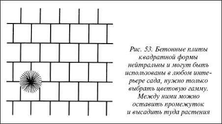
Рис. 53. Бетонные плиты квадратной формы нейтральны и могут быть использованы в любом интерьере сада, нужно только выбрать цветовую гамму. Между ними можно оставить промежуток и высадить туда растения
Совет
Плиты круглой формы отливают в отрезках металлической трубы, можно в качестве формы использовать обыкновенное ведро без дна.
Арматуру кладут после заполнения формы бетоном наполовину для того, чтобы она оказалась в середине бетонной плиты. Затем форму полностью заполняют бетоном, хорошо утрамбовывают его, выравнивая поверхность. Надо следить, чтобы арматура была полностью утоплена в бетонном растворе. Если необходимо получить плотную, гладкую, как бы отполированную поверхность, ее железнят: на сырую поверхность раствора насыпают ровный слой сухого цемента толщиной 5–7 мм и втирают его металлической гладилкой так, чтобы поверхность была гладкой, а цемент пропитался водой. Плиты должны находиться в формах не менее 2–3 дней, до полного затвердения. Поверхность их надо ежедневно смачивать водой, поливая из лейки или шланга, и закрывать от прямых солнечных лучей.
Основные этапы отливки цементных плитФорму устанавливают на ровном основании (лист железа, шифера, фанеры).
Готовят цементный раствор: цемент, песок, гравий или мелкий щебень (1: 1: 2) замешивают в таком количестве воды, чтобы раствор получился жидким.
Готовый раствор заливают в форму и с помощью рейки выравнивают наружную плоскость плитки.
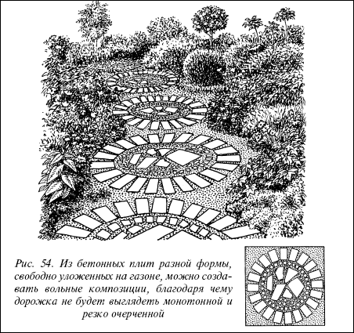
Рис. 54. Из бетонных плит разной формы, свободно уложенных на газоне, можно создавать вольные композиции, благодаря чему дорожка не будет выглядеть монотонной и резко очерченной
При армировании плиток раствор заливают в 2 приема: сначала половину, затем укладывают арматуру и заливают форму до конца оставшимся раствором так, чтобы он целиком покрывал арматуру.
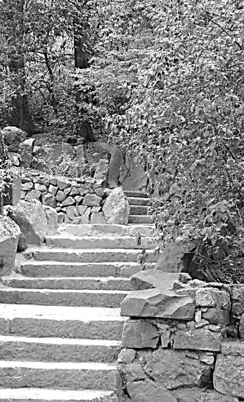
После того, как раствор осядет, поверхность заглаживают деревянной гладилкой, которая придает некоторую шероховатость, необходимую для удобства ходьбы.
Форму разбирают через 2–3 дня, в течение этого времени поверхность плит регулярно смачивают водой и берегут от прямых солнечных лучей, чтобы цемент не растрескался.
Можно изготовить плитки, осуществив все операции в обратной последовательности. В форму, установленную на ровную твердую поверхность, укладывают декоративный слой (галька, бой стекла, керамическая плитка и др.), заливают в форму бетонный раствор и выравнивают наружную поверхность. Перед установкой формы укладывают плоские силуэты-рисунки из фанеры, проволоки, сетки и накрывают их полиэтиленовой пленкой. Установив формы, заливают раствор. Плитки получаются с тонким рисунком– рельефом. В этих случаях наполнителем раствора служит песок, а для прочности используют арматуру.
Монолитные бетонные дорожкиМонолитные дорожки отличаются высокой прочностью, не деформируются и не продавливаются даже при передвижении по ним машины, садовой техники, тяжело нагруженной тачки.
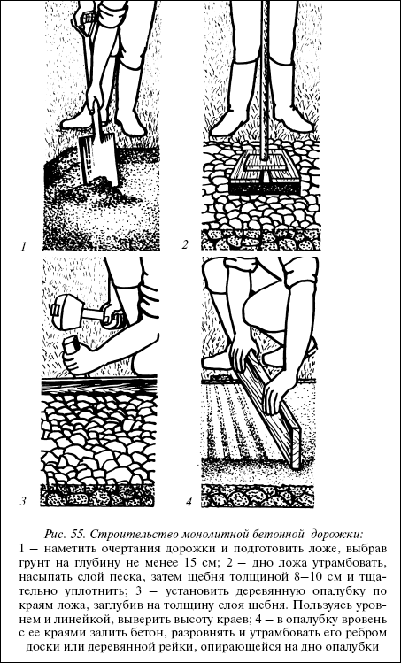
Рис. 55. Строительство монолитной бетонной дорожки:
1 – наметить очертания дорожки и подготовить ложе, выбрав грунт на глубину не менее 15 см; 2 – дно ложа утрамбовать, насыпать слой песка, затем щебня толщиной 8—10 см и тщательно уплотнить; 3 – установить деревянную опалубку по краям ложа, заглубив на толщину слоя щебня. Пользуясь уровнем и линейкой, выверить высоту краев; 4 – в опалубку вровень с ее краями залить бетон, разровнять и утрамбовать его ребром доски или деревянной рейки, опирающейся на дно опалубки
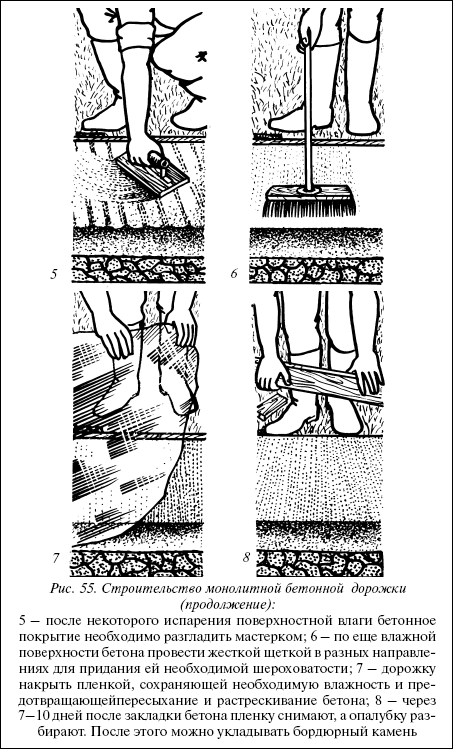
Рис. 55. Строительство монолитной бетонной дорожки (продолжение):
5 – после некоторого испарения поверхностной влаги бетонное покрытие необходимо разгладить мастерком; 6 – по еще влажной поверхности бетона провести жесткой щеткой в разных направлениях для придания ей необходимой шероховатости; 7 – дорожку накрыть пленкой, сохраняющей необходимую влажность и предотвращающей пересыхание и растрескивание бетона; 8 – через 7—10 дней после закладки бетона пленку снимают, а опалубку разбирают. После этого можно укладывать бордюрный камень
Такие дорожки имеет смысл построить в местах заезда транспорта, от ворот к гаражу, сараю или к месту незаконченного строительства, так как в этих местах дорожка должна выдерживать значительные нагрузки. Однако можно строить монолитные дорожки и по всей площади участка.
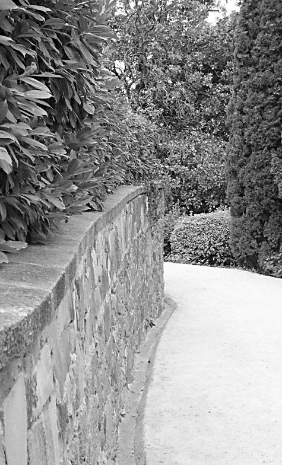
Сделать монолитную дорожку из бетона совсем не сложно. Кроме того, дорожкам можно придать любую форму, создать плавные линии и сложные криволинейные очертания. Для изготовления такой дорожки предварительно намечают очертания дорожки или площадки и готовят ложе, для чего снимают плодородный слой почвы на глубину не менее 15 см, дно ложа тщательно уплотняют. По бокам дорожек, вдоль и поперек, (с интервалом 1,5–2 м) по горизонтальному уровню крепят опалубку из ровных досок толщиной 2–2,5 см. В опалубку засыпают песок, а затем щебенку слоем 8-10 см, утрамбовывают ее и заливают бетоном в уровень опалубки. Бетон тщательно укатывают, а поверхность выравнивают ребром деревянной рейки, опирающейся на доски опалубки. Бетон после укладки сразу же расширяется и схватывается. С учетом этого через каждый 1 м бетонной поверхности оставляют пустотелые соединительные швы, которые впоследствии заполняются.
Сразу после утрамбовки бетона влажной доской до нужного уровня бетонную поверхность заглаживают штукатурным мастерком, чтобы выступившая влага растеклась ровным слоем. Когда бетон начнет затвердевать, оставаясь, однако, еще влажным, по нему проводят плотной щеткой. Образуется шершавая неровная структура поверхности. По мере подсыхания бетона в него можно вкрапить гальку.
Внимание
После укладки бетон накрывают полиэтиленовой пленкой, защищая от дождя и обеспечивая возможность постепенного высыхания. Если дорожку делают летом, по ней можно ходить через 5 дней, зимой – лишь через 10 дней, тяжелые грузы – перевозить по прошествии 2 недель. Тогда же проводят распалубку.
По краям дорожки укладывают бордюрный камень, которым могут служить булыжники, кирпичи или другой материал.
Окантовка дорожекМногие дорожки, в том числе и те, что пролегают вблизи цветников и газонов, не нуждаются в четком обозначении края. Другие же заметно выигрывают от невысокого узкого ограждения контрастным материалом. Кирпич или брусчатку углубляют в землю вдоль дорожек из бетона или плит. Окантовку бетонной дорожки лучше всего проводить с внутренней стороны опалубки еще до заливки бетонным раствором.